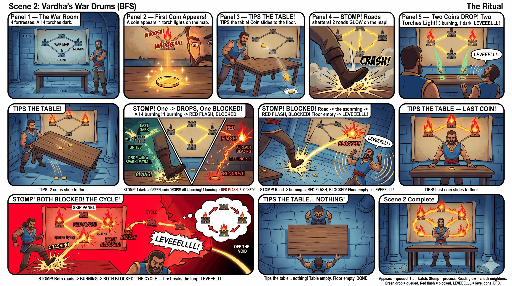
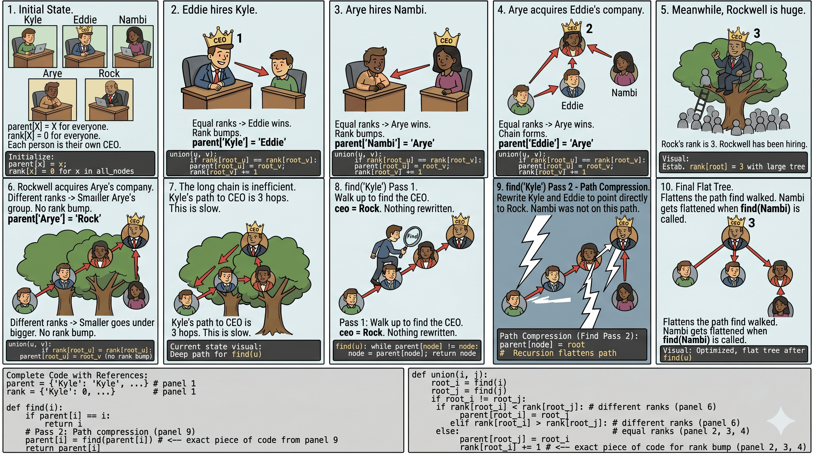
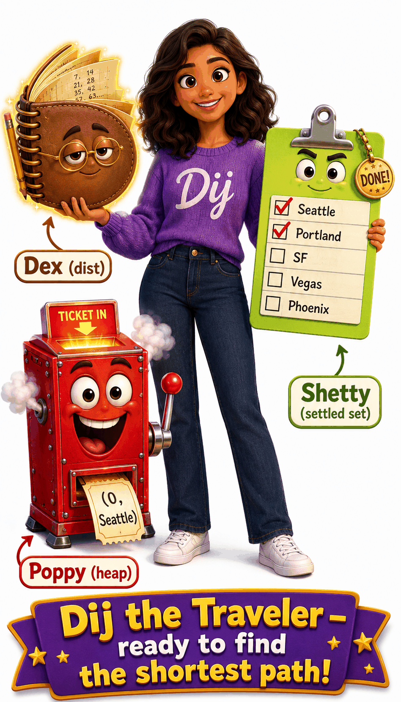

The Khansaar Map
Khansaar is a vast territory of walled fortresses connected by dusty roads. Different factions control different fortresses. Every graph problem is a war in Khansaar.
The Khansaar Map — What Everything Means
Fortress = Node
Each fortress is a walled compound. When Deva kicks the gate open, he looks at the wall inside. There's a number carved on the wall — that's the fortress value. If there's no gate at all — just empty desert — it's a dead-end.
In code: A fortress =
In code: A fortress =
node. Number on wall = node.val or grid[r][c].
Road = Edge
Dusty roads connect fortresses. Some roads are one-way (directed) — Deva can only go that direction. Some roads are two-way (undirected) — Deva can travel both ways. Some roads have toll signs (weights/costs).
In code: Road = edge. One-way = directed edge. Toll = weight. All roads from a fortress =
In code: Road = edge. One-way = directed edge. Toll = weight. All roads from a fortress =
graph[node].
War Paint = Visited
When Deva conquers a fortress, he slashes war paint on the gate. If he arrives at a fortress and sees war paint already there — already conquered, turn back. No fortress gets raided twice.
In code: War paint =
In code: War paint =
visited set. Check: if node in visited: return. Mark: visited.add(node).
Two Types of Khansaar
Road Map (adjacency list): Named fortresses with specific roads between them. Each fortress has a map scroll listing where its roads lead.
Village Grid (2D matrix): A flat grid of villages. Each village connects to 4 neighbors (N/S/E/W). Land =
graph = {A: [B, C], B: [A, D]}Village Grid (2D matrix): A flat grid of villages. Each village connects to 4 neighbors (N/S/E/W). Land =
'1', Water = '0'.
Quick Reference: Khansaar = Graph
🏰
Fortress
A walled compound Deva can raid
⭕
Node / Vertex
node or grid[r][c]🛤
Road
Dusty path connecting two fortresses
➡
Edge
graph[node] = list of neighbors🩸
War Paint
Slash on the gate = already conquered
✔
Visited Set
visited.add(node)📜
Map Scroll
List of roads out of this fortress
📋
Adjacency List
for nei in graph[node]🌍
Village Grid
Flat grid, 4 directions (N/S/E/W)
📊
2D Matrix
grid[r][c], 4-directional💰
Road Toll
Cost/weight on a road
⚖
Edge Weight
graph[node] = [(nei, weight)]🏳
Clan / Faction
Group of connected fortresses under one leader
🔗
Connected Component
find(x) == find(y)The Characters
⚔
Deva (the lone raider)
Charges deep into one road, dead-end, backtracks. Goes alone.
🔄
DFS (Scene 1)
def dfs(node):🥁
Vardha (the war drums)
Beats drums from his throne. Sound spreads in waves — ring by ring.
📦
BFS (Scene 2)
deque([start])👑
Rajamanaar (war planner)
Won't attack until all supply lines secured. Plans order by dependencies.
📋
Topological Sort (Scene 3)
in_degree[node]🏢
The Board Room (mergers)
Companies merge through acquisitions. Track who reports to which CEO.
🌲
Union-Find (Scene 4)
parent[], find(), union()🧭
Dij the Traveler
Roads have distances. Dij always visits the closest city next.
💰
Dijkstra (Scene 5)
heapq, dist[], settledThe Decision Flowchart
Four questions. That's all you need to pick the right scene for ANY graph problem.
START
Read the graph problem
↓
Q0
Does the war council need to plan the ORDER of conquest?
How to spot it:
The problem says "prerequisites", "ordering", "before/after", "dependency", "alien dictionary".
Key signal: You need to find a valid sequence where dependencies are satisfied.
Key signal: You need to find a valid sequence where dependencies are satisfied.
YES →
Scene 3
RAJAMANAAR'S BATTLE PLAN
Topological Sort. Count deps, process zero-dep first.
NO ↓
↓
Q1
Are companies merging or checking if they share the same CEO?
How to spot it:
The problem says "connected components", "valid tree", "redundant connection", "union", "groups".
Key signal: You need to merge companies of nodes or count groups efficiently, especially with edge-by-edge processing.
Key signal: You need to merge companies of nodes or count groups efficiently, especially with edge-by-edge processing.
YES →
Scene 4
THE CORPORATE MERGER
Union-Find. Merge companies, track CEOs.
NO ↓
↓
Q2
Do the roads between fortresses have TOLLS (weights/costs)?
How to spot it:
The problem says "cost", "time", "distance", "minimum cost", "network delay".
Key signal: Edges have numbers attached and you need the shortest/cheapest path.
Key signal: Edges have numbers attached and you need the shortest/cheapest path.
YES →
Scene 5
DIJ THE TRAVELER
Dijkstra. Heap queue. Always closest city next.
NO ↓
↓
Q3
Does Vardha need to spread influence in WAVES? (shortest unweighted path or simultaneous spread)
How to spot it:
The problem says "minimum minutes", "nearest gate", "spread simultaneously", "multiple sources at once".
Key signal: Things happen at the same time (rotting, spreading) or you need shortest distance on an unweighted graph.
Key signal: Things happen at the same time (rotting, spreading) or you need shortest distance on an unweighted graph.
YES →
Scene 2
VARDHA'S WAR DRUMS
BFS. Waves spread outward ring by ring.
NO →
Scene 1
DEVA'S LONE RAID
DFS. Charge deep, backtrack, repeat.
Why this covers EVERY graph problem: You either need ordering (Topo Sort), grouping (Union-Find), weighted shortest path (Dijkstra), simultaneous spread (BFS), or plain exploration (DFS). There is no 6th type.
The 5 Scenes
Each scene is a ritual. Each step in the ritual maps to exactly one line of code. Memorize the ritual, you've memorized the algorithm.
Scene 1: Deva's Lone Raid
DFS — charge deep, backtrack, repeat

THE RITUAL (Adjacency List)
❶ Deva arrives at a fortress gate. War paint on the wall? Already conquered — turn back.
❷ Kicks the gate open. Slashes war paint on the wall — this fortress is MINE.
❸ Grabs the map scroll inside — sees all roads leading out.
❹ Charges down each road one by one → same ritual starts at the next fortress.
❺ All roads explored. Walks back the way he came.
❷ Kicks the gate open. Slashes war paint on the wall — this fortress is MINE.
❸ Grabs the map scroll inside — sees all roads leading out.
❹ Charges down each road one by one → same ritual starts at the next fortress.
❺ All roads explored. Walks back the way he came.
RITUAL → CODE (Adjacency List)
THE RITUAL (Village Grid)
❶ Deva steps into a village. Off the map? Turn back. Water? Turn back. War paint? Turn back.
❷ Slashes war paint on the ground.
❸ Steps North, South, East, West — same ritual at each neighbor.
❷ Slashes war paint on the ground.
❸ Steps North, South, East, West — same ritual at each neighbor.
RITUAL → CODE (Grid)
Common Mistakes
WRONG — war paint AFTER charging down roads
for nei in graph[node]:
dfs(nei)
visited.add(node) # TOO LATE!
# Deva revisits same fortress = infinite loopRIGHT — war paint BEFORE charging
visited.add(node) # paint FIRST
for nei in graph[node]:
dfs(nei) # then chargeWRONG — forgetting boundary check on grid
def dfs(r, c):
grid[r][c] = '0'
# IndexError when r or c is out of bounds!RIGHT — check boundaries FIRST
def dfs(r, c):
if r<0 or r>=R or c<0 or c>=C:
return # off the map!
if grid[r][c] == '0':
return # water or paintedScene 2: Vardha's War Drums
BFS — waves spread outward ring by ring

THE RITUAL
❶ Vardha places the first fortress tokens on his war table. Paints them immediately.
❷ Flips the table — all tokens crash to the ground (current wave).
❸ Walks to each token on the ground one by one. Reads its scroll. Finds all connected unpainted fortresses. Paints them. Places their tokens on the table.
❹ Ground clear. One drum beat complete. Record the wave count.
❺ Flips the table again. Repeats from ❸. Stops when he flips and nothing falls.
❷ Flips the table — all tokens crash to the ground (current wave).
❸ Walks to each token on the ground one by one. Reads its scroll. Finds all connected unpainted fortresses. Paints them. Places their tokens on the table.
❹ Ground clear. One drum beat complete. Record the wave count.
❺ Flips the table again. Repeats from ❸. Stops when he flips and nothing falls.
War table = queue. Ground = current wave. New tokens always land on the TABLE (next wave), never on the ground (current wave). That's why waves don't mix.
Multi-Source BFS — multiple drums at once
Sometimes Vardha doesn't start from ONE fortress — he places ALL rotten oranges or ALL gates on the war table at once. The first wave spreads from all of them simultaneously. This is multi-source BFS — same ritual, just start with more tokens.
RITUAL → CODE
Common Mistakes
WRONG — painting when POPPING from table
node = q.popleft()
visited.add(node) # TOO LATE!
# Same fortress already added 3 times
# by 3 different neighborsRIGHT — paint when PLACING on table
if nei not in visited:
visited.add(nei) # paint NOW
q.append(nei) # then place
# No duplicates on the table!WRONG — no level tracking
while q:
node = q.popleft()
# How many waves? No idea!
# Can't count levels.RIGHT — for loop = one drum beat
while q:
for _ in range(len(q)): # this wave
node = q.popleft()
waves += 1 # wave done!Scene 3: Rajamanaar's Battle Plan
Topological Sort — plan conquest order by dependencies

THE RITUAL
❶ Rajamanaar's war council counts how many supply lines each fortress depends on (in-degree).
❷ Fortresses with ZERO dependencies → ready to attack. Put them on the war table.
❸ Pick a fortress from the table. Conquer it. Cross it off the board.
❹ Every fortress that depended on the conquered one → reduce its dependency count by 1. Hits zero? Add to war table.
❺ Table empty? If all fortresses conquered → valid plan. If some remain unconquered → impossible (cycle!).
❷ Fortresses with ZERO dependencies → ready to attack. Put them on the war table.
❸ Pick a fortress from the table. Conquer it. Cross it off the board.
❹ Every fortress that depended on the conquered one → reduce its dependency count by 1. Hits zero? Add to war table.
❺ Table empty? If all fortresses conquered → valid plan. If some remain unconquered → impossible (cycle!).
Why cycle = impossible: If fortress A depends on B and B depends on A, neither ever reaches zero. They sit unconquered forever. That's a deadlock.
RITUAL → CODE
Common Mistakes
WRONG — building in-degree but forgetting adjacency list
for u, v in edges:
in_deg[v] += 1
# but where is graph[u].append(v)?
# Can't find neighbors later!RIGHT — build BOTH at the same time
for u, v in edges:
graph[u].append(v)
in_deg[v] += 1WRONG — not checking for cycle
return order # What if len(order) < n?
# Some nodes were in a cycle
# and never reached 0!RIGHT — verify all conquered
if len(order) != n:
return [] # cycle detected!
return orderScene 4: The Corporate Merger
Union-Find — merge companies, track CEOs


THE RITUAL
❶ Every person starts as their own CEO.
❷ A merger between two people: trace each person's chain up to find their true CEO.
❸ Same CEO already? They're the same company — this merger is REDUNDANT. Return False.
❹ Different CEOs? The smaller company goes under the bigger one (union by rank). Companies merge.
❺ The Efficiency Hack: every person in the chain now points directly to the top CEO (path compression). Next lookup is instant.
parent[x] = x — "I am my own boss."❷ A merger between two people: trace each person's chain up to find their true CEO.
❸ Same CEO already? They're the same company — this merger is REDUNDANT. Return False.
❹ Different CEOs? The smaller company goes under the bigger one (union by rank). Companies merge.
❺ The Efficiency Hack: every person in the chain now points directly to the top CEO (path compression). Next lookup is instant.
No recursion. No queue. Just arrays. Two arrays:
parent[] (who's my boss?) and rank[] (how tall is my tree?). Two functions: find() and union(). That's the entire data structure.
RITUAL → CODE
# ❶ Every person = own CEO
parent = list(range(n))
rank = [0] * n
# ❷❺ Find CEO (with efficiency hack)
def find(x):
if parent[x] != x:
parent[x] = find(parent[x]) # efficiency hack: point straight to CEO
return parent[x]
# ❷❸❹ Merger
def union(x, y):
px, py = find(x), find(y)
if px == py: return False # ❸ same company = redundant
if rank[px] < rank[py]: # ❹ smaller under bigger
px, py = py, px
parent[py] = px
if rank[px] == rank[py]:
rank[px] += 1
return TrueCommon Mistakes
WRONG — no path compression
def find(x):
while parent[x] != x:
x = parent[x]
return x
# Works but O(n) per find in worst caseRIGHT — path compression = instant next time
def find(x):
if parent[x] != x:
parent[x] = find(parent[x])
return parent[x]
# O(α(n)) ≈ O(1) amortizedWRONG — union without checking find first
parent[x] = y # Direct assignment!
# Destroys existing company structureRIGHT — always find CEOs first, then merge
px, py = find(x), find(y)
if px == py: return False
parent[py] = px # merge CEOsScene 5: Dij the Traveler
Dijkstra — notebook, heap queue, DONE stamp


THE RITUAL
❶ Dij opens his notebook — writes ∞ for every city except the start (distance = 0). Seeds the heap queue with the start city.
❷ Pop the closest city from the heap queue — smallest distance always comes out first.
❸ Already DONE-stamped? Stale ticket — skip it.
❹ Stamp it DONE. Its distance is now final.
❺ Relax neighbors: for each road out, calculate
❻ Repeat from ❷. Stop when the heap queue is empty.
❷ Pop the closest city from the heap queue — smallest distance always comes out first.
❸ Already DONE-stamped? Stale ticket — skip it.
❹ Stamp it DONE. Its distance is now final.
❺ Relax neighbors: for each road out, calculate
my dist + road weight. Shorter than notebook? Update notebook, push neighbor into the heap queue.❻ Repeat from ❷. Stop when the heap queue is empty.
Three magic items:
dist (notebook — best-known distance per city), queue (min-heap — always hands back the smallest ticket first), settled (DONE stamp set — once stamped, never touched again). Non-negative edges only!
RITUAL → CODE
Common Mistakes
WRONG — no DONE check
d, city = heappop(queue)
# Process even if already stamped DONE!
# Wastes time on stale tickets.RIGHT — skip DONE-stamped cities
d, city = heappop(queue)
if city in settled:
continue # already DONE — skipWRONG — using Dijkstra with negative weights
# Road weight = -5?
# Dijkstra assumes: once DONE-stamped,
# no shorter path exists.
# Negative edges break this!RIGHT — use Bellman-Ford for negative edges
# Negative edges? Use Bellman-Ford:
for _ in range(n-1): # n-1 rounds
for u,v,w in edges: # relax ALL
if dist[u]+w < dist[v]:
dist[v] = dist[u]+w18 Problems by Scene
Scene 1 — Deva's Lone Raid (DFS)
1 Number of Islands (#200) Medium
▶PROBLEM
Given a 2D grid of '1' (land) and '0' (water), count the number of islands. An island is surrounded by water and formed by connecting adjacent lands horizontally or vertically.FLOWCHART REASONING
Prerequisites? No. Grouping? Not merging. Weighted? No. Waves? No. → Scene 1 Deva's Raid on a village grid.
THE RITUAL
Deva walks through the village grid, cell by cell. Sees an unconquered land cell ('1')? Starts a new raid. Charges through all connected land, painting each cell ('1' → '0'). Raid complete = one island found. Move to next unvisited cell. Count total raids.
WHAT CHANGES FROM THE TEMPLATE?
Outer loop added: The template shows ONE raid. But here you need to find ALL islands, so you loop through every cell in the grid. Each time you hit an unpainted '1', start a new raid and increment the count.War paint = mutate grid: Instead of a separate visited set, just flip
'1' to '0'. Simpler and faster.
def numIslands(grid):
R, C = len(grid), len(grid[0])
count = 0
def dfs(r, c):
if r < 0 or r >= R or c < 0 or c >= C or grid[r][c] == '0':
return # off map or water or painted
grid[r][c] = '0' # slash war paint
for dr, dc in [(1,0),(-1,0),(0,1),(0,-1)]:
dfs(r + dr, c + dc) # charge N/S/E/W
for r in range(R):
for c in range(C):
if grid[r][c] == '1': # unconquered land!
dfs(r, c) # new raid
count += 1 # one more island
return count2 Max Area of Island (#695) Medium
▶PROBLEM
Given a 2D grid of 1 (land) and 0 (water), find the maximum area of an island.FLOWCHART REASONING
Same as Number of Islands but track SIZE of each raid. → Scene 1THE RITUAL
Same raid as #200, but now Deva counts how many villages he conquers in each raid. After each raid, checks if this was his biggest raid yet. Reports the biggest.
WHAT CHANGES FROM THE TEMPLATE?
DFS returns a count: Each call returns 1 + sum of all 4 directions. Dead-end returns 0. The total bubbles up as the area of the island.
def maxAreaOfIsland(grid):
R, C = len(grid), len(grid[0])
def dfs(r, c):
if r < 0 or r >= R or c < 0 or c >= C or grid[r][c] == 0:
return 0 # off map or water = 0 villages
grid[r][c] = 0 # war paint
return 1 + sum(dfs(r+dr, c+dc) # me + all 4 directions
for dr, dc in [(1,0),(-1,0),(0,1),(0,-1)])
return max((dfs(r, c) for r in range(R) for c in range(C)), default=0)3 Clone Graph (#133) Medium
▶PROBLEM
Given a reference of a node in a connected undirected graph, return a deep copy (clone) of the graph.FLOWCHART REASONING
No prerequisites, no grouping, no weights, no waves. Just explore every node. → Scene 1THE RITUAL
Deva walks through original Khansaar. At each fortress, he builds an exact replica in New Khansaar. Uses a mirror map (old → new) to avoid re-cloning. When wiring up roads, uses the mirror to connect cloned fortresses.
WHAT CHANGES FROM THE TEMPLATE?
Visited set becomes a hashmap: Instead of visited = set(), use old_to_new = {}. The key is the original node, the value is its clone. This serves as BOTH visited check AND clone storage.DFS returns the clone: Each call returns the cloned node so the parent can wire its roads.
def cloneGraph(node):
old_to_new = {} # mirror map: original → clone
def dfs(node):
if node in old_to_new: # already cloned = war paint
return old_to_new[node]
clone = Node(node.val) # build replica
old_to_new[node] = clone # register in mirror
for nei in node.neighbors: # map scroll — all roads
clone.neighbors.append(dfs(nei)) # wire cloned roads
return clone
return dfs(node) if node else None4 Pacific Atlantic Water Flow (#417) Medium
▶PROBLEM
Given an m×n matrix of heights, water flows from higher to equal/lower cells. Pacific ocean touches the top and left edges. Atlantic touches the bottom and right edges. Find all cells that can reach BOTH oceans.FLOWCHART REASONING
No prerequisites, no grouping, no weights, no waves. Pure exploration. → Scene 1THE RITUAL
Reverse raids from the oceans. Instead of asking "can this cell reach the ocean?" (hard), ask "can the ocean reach this cell going UPHILL?" (easier). Two raid teams: Pacific team raids from top/left border. Atlantic team raids from bottom/right border. Answer = cells conquered by BOTH teams.
WHAT CHANGES FROM THE TEMPLATE?
DFS starts from borders, not from each cell. Two separate visited sets.Direction reversed: Water flows downhill, but we raid UPHILL (
next >= current).Answer = intersection of two visited sets.
def pacificAtlantic(heights):
R, C = len(heights), len(heights[0])
pac, atl = set(), set()
def dfs(r, c, visit, prev_h):
if (r,c) in visit or r<0 or r>=R or c<0 or c>=C:
return
if heights[r][c] < prev_h: # can't go downhill (reverse!)
return
visit.add((r, c)) # war paint for this team
for dr, dc in [(1,0),(-1,0),(0,1),(0,-1)]:
dfs(r+dr, c+dc, visit, heights[r][c])
for c in range(C):
dfs(0, c, pac, 0) # Pacific: top border
dfs(R-1, c, atl, 0) # Atlantic: bottom border
for r in range(R):
dfs(r, 0, pac, 0) # Pacific: left border
dfs(r, C-1, atl, 0) # Atlantic: right border
return list(pac & atl) # both teams reached = answer5 Surrounded Regions (#130) Medium
▶PROBLEM
Given a 2D board with 'X' and 'O', capture all regions of 'O' that are NOT connected to the border. Captured regions are flipped to 'X'.FLOWCHART REASONING
Same structure as Pacific Atlantic — border-based DFS. → Scene 1THE RITUAL
Save the border-connected, capture everything else. Deva raids all 'O' cells on the border — marks them SAFE (temporary mark 'S'). Then sweeps the whole grid: anything still 'O' → captured ('X'). Anything 'S' → restore to 'O'.
WHAT CHANGES FROM THE TEMPLATE?
Three-pass approach: (1) DFS from border 'O's to mark safe. (2) Sweep: unmarked 'O' → 'X'. (3) Sweep: 'S' → 'O'.War paint = temporary marker (
'S') instead of a visited set.
def solve(board):
R, C = len(board), len(board[0])
def dfs(r, c):
if r<0 or r>=R or c<0 or c>=C or board[r][c] != 'O':
return
board[r][c] = 'S' # mark SAFE
for dr, dc in [(1,0),(-1,0),(0,1),(0,-1)]:
dfs(r + dr, c + dc)
for r in range(R): # raid from ALL borders
for c in range(C):
if (r in (0, R-1) or c in (0, C-1)) and board[r][c] == 'O':
dfs(r, c)
for r in range(R): # sweep
for c in range(C):
if board[r][c] == 'O': board[r][c] = 'X' # captured!
elif board[r][c] == 'S': board[r][c] = 'O' # restore safe6 Reconstruct Itinerary (#332) Hard
▶PROBLEM
Given a list of airline tickets [from, to], reconstruct the itinerary starting from "JFK". Use all tickets exactly once. If multiple valid itineraries, return the lexicographically smallest.FLOWCHART REASONING
It's about traversing a graph using every EDGE exactly once (Eulerian path). No weights, no grouping, no prerequisites. → Scene 1 (DFS variant)THE RITUAL
Deva must use every road exactly once. At each fortress, he sorts roads alphabetically and pops the first one (removes it so he never takes it again). He adds the fortress to his path AFTER all roads are used (post-order). Final path is reversed.
WHAT CHANGES FROM THE TEMPLATE?
Visit EDGES not NODES: No visited set for nodes. Instead, pop edges from sorted adjacency list.Post-order insertion: Append to result AFTER all neighbors are visited, then reverse. This handles dead-ends correctly (Hierholzer's algorithm).
Sort adjacency lists in reverse so
pop() gives lexicographically smallest.
def findItinerary(tickets):
graph = defaultdict(list)
for src, dst in sorted(tickets, reverse=True): # reverse sort
graph[src].append(dst) # so pop() gives smallest
route = []
def dfs(node):
while graph[node]: # roads left?
dfs(graph[node].pop()) # take the road (removes it)
route.append(node) # post-order: add AFTER all roads used
dfs("JFK")
return route[::-1] # reverse = correct orderScene 2 — Vardha's War Drums (BFS)
7 Rotting Oranges (#994) Medium
▶PROBLEM
In a grid, 0 = empty, 1 = fresh orange, 2 = rotten orange. Every minute, fresh oranges adjacent to rotten ones also rot. Return the minimum minutes until no fresh orange remains, or -1 if impossible.FLOWCHART REASONING
No prerequisites. No grouping. No weights. Simultaneous spread (all rotten oranges rot neighbors at the SAME time)? YES → Scene 2THE RITUAL
Multi-source BFS. ALL rotten oranges are initial drum sources — they all go on the war table at once. Each drum beat (wave) = 1 minute. After all waves, check if any fresh oranges remain. If yes, return -1.
WHAT CHANGES FROM THE TEMPLATE?
Multiple starting sources: Scan grid, put ALL 2s on the queue. Count fresh oranges.Track minutes: Each complete wave = 1 minute. Only increment if the wave actually rotted something.
Final check: If
fresh > 0 after all waves, return -1.
def orangesRotting(grid):
R, C = len(grid), len(grid[0])
q = deque()
fresh = 0
for r in range(R):
for c in range(C):
if grid[r][c] == 2: q.append((r, c)) # all rotten → war table
elif grid[r][c] == 1: fresh += 1 # count fresh
minutes = 0
while q and fresh > 0: # stop if no fresh left
for _ in range(len(q)): # flip table → one wave
r, c = q.popleft()
for dr, dc in [(1,0),(-1,0),(0,1),(0,-1)]:
nr, nc = r+dr, c+dc
if 0<=nr# rot it (paint)
fresh -= 1
q.append((nr, nc)) # token on table
minutes += 1 # drum beat complete
return minutes if fresh == 0 else -1 8 Walls and Gates (#286) Medium
▶PROBLEM
In a grid: -1 = wall, 0 = gate, INF = empty room. Fill each empty room with the distance to its nearest gate.FLOWCHART REASONING
Nearest distance from multiple sources simultaneously. → Scene 2 (Multi-source BFS)THE RITUAL
ALL gates are initial drum sources. Wave 1 reaches rooms 1 step away. Wave 2 reaches rooms 2 steps away. First time a room is reached = shortest distance (BFS guarantees this).
WHAT CHANGES FROM THE TEMPLATE?
Sources = all gates (value 0). Visited check = rooms[nr][nc] == INF (only visit unvisited rooms).Distance tracking: Set
rooms[nr][nc] = rooms[r][c] + 1 — each wave adds 1 to distance.
def wallsAndGates(rooms):
R, C = len(rooms), len(rooms[0])
INF = 2147483647
q = deque()
for r in range(R):
for c in range(C):
if rooms[r][c] == 0: # gate → war table
q.append((r, c))
while q:
r, c = q.popleft()
for dr, dc in [(1,0),(-1,0),(0,1),(0,-1)]:
nr, nc = r+dr, c+dc
if 0<=nr# distance = parent + 1
q.append((nr, nc)) Scene 3 — Rajamanaar's Battle Plan (Topological Sort)
9 Course Schedule (#207) Medium
▶PROBLEM
There are numCourses courses with prerequisites. Return true if you can finish all courses.FLOWCHART REASONING
Prerequisites/ordering? YES → Scene 3THE RITUAL
Standard Rajamanaar ritual. Build dependency board. Process zero-dep fortresses first. If all fortresses conquered at the end → valid plan (return True). If some remain → cycle → impossible (return False).
WHAT CHANGES FROM THE TEMPLATE?
This is the pure template. Edge direction: [course, prereq] means prereq → course. Return len(order) == numCourses.
def canFinish(numCourses, prerequisites):
graph = defaultdict(list)
in_deg = [0] * numCourses
for crs, pre in prerequisites:
graph[pre].append(crs) # prereq → course
in_deg[crs] += 1 # count supply lines
q = deque(i for i in range(numCourses) if in_deg[i] == 0)
count = 0
while q:
node = q.popleft() # conquer
count += 1
for nei in graph[node]:
in_deg[nei] -= 1 # reduce deps
if in_deg[nei] == 0:
q.append(nei) # unlocked!
return count == numCourses # all conquered?10 Course Schedule II (#210) Medium
▶PROBLEM
Return the ordering of courses you should take. If impossible, return empty array.FLOWCHART REASONING
Same as Course Schedule but return the ORDER. → Scene 3THE RITUAL
Identical to Course Schedule, but instead of just counting, record the conquest order in a list.
WHAT CHANGES FROM THE TEMPLATE?
Return the order list instead of a boolean. Use order.append(node) as you process. If len(order) != numCourses, return [].
def findOrder(numCourses, prerequisites):
graph = defaultdict(list)
in_deg = [0] * numCourses
for crs, pre in prerequisites:
graph[pre].append(crs)
in_deg[crs] += 1
q = deque(i for i in range(numCourses) if in_deg[i] == 0)
order = []
while q:
node = q.popleft()
order.append(node) # record conquest order
for nei in graph[node]:
in_deg[nei] -= 1
if in_deg[nei] == 0:
q.append(nei)
return order if len(order) == numCourses else []11 Alien Dictionary (#269) Hard
▶PROBLEM
Given a sorted list of words in an alien language, derive the order of characters.FLOWCHART REASONING
"Derive the ORDER of characters" = ordering with dependencies. → Scene 3THE RITUAL
Two phases. Phase 1: Extract dependency edges by comparing adjacent words — the first different character gives you an edge (char_a comes before char_b). Phase 2: Standard Rajamanaar topo sort on characters.
WHAT CHANGES FROM THE TEMPLATE?
Edge extraction phase added: Compare words[i] vs words[i+1]. Walk both character by character. First mismatch = edge.Edge case: If
words[i] is a prefix of words[i+1] but longer, the input is INVALID (return "").Nodes = all unique characters, not integers.
def alienOrder(words):
graph = {c: set() for w in words for c in w}
in_deg = {c: 0 for c in graph}
for i in range(len(words) - 1): # compare adjacent words
w1, w2 = words[i], words[i+1]
if len(w1) > len(w2) and w1[:len(w2)] == w2:
return "" # invalid: prefix is longer
for c1, c2 in zip(w1, w2):
if c1 != c2:
if c2 not in graph[c1]:
graph[c1].add(c2) # c1 → c2 edge
in_deg[c2] += 1
break # only first diff matters
q = deque(c for c in in_deg if in_deg[c] == 0)
order = []
while q:
c = q.popleft()
order.append(c)
for nei in graph[c]:
in_deg[nei] -= 1
if in_deg[nei] == 0:
q.append(nei)
return "".join(order) if len(order) == len(in_deg) else ""Scene 4 — The Corporate Merger (Union-Find)
12 Graph Valid Tree (#261) Medium
▶PROBLEM
Given n nodes and a list of undirected edges, determine if these edges form a valid tree (connected, no cycles).FLOWCHART REASONING
"Connected, no cycles" = checking connectivity of groups. → Scene 4THE RITUAL
A valid tree has exactly n-1 edges and is fully connected. Process each merger. If any merger tries to merge two nodes that are already in the same company → cycle → NOT a tree.
WHAT CHANGES FROM THE TEMPLATE?
Quick check first: If edges != n-1, immediately return False.Union all edges: If any
union() returns False → same company already → cycle.Both conditions needed: n-1 edges AND no redundant unions.
def validTree(n, edges):
if len(edges) != n - 1: return False # tree must have n-1 edges
parent = list(range(n))
rank = [0] * n
def find(x):
if parent[x] != x:
parent[x] = find(parent[x])
return parent[x]
def union(x, y):
px, py = find(x), find(y)
if px == py: return False # same company = cycle!
if rank[px] < rank[py]: px, py = py, px
parent[py] = px
if rank[px] == rank[py]: rank[px] += 1
return True
return all(union(u, v) for u, v in edges)13 Number of Connected Components (#323) Medium
▶PROBLEM
Given n nodes and a list of undirected edges, find the number of connected components.FLOWCHART REASONING
Count groups = grouping/connectivity. → Scene 4THE RITUAL
Start with n separate companies (components = n). Each successful merger combines two companies into one → components decreases by 1. After all mergers, the remaining count is the answer.
WHAT CHANGES FROM THE TEMPLATE?
Counter starts at n. Each successful union() → components -= 1. Final count = answer.
def countComponents(n, edges):
parent = list(range(n))
rank = [0] * n
components = n # start: n clans
def find(x):
if parent[x] != x:
parent[x] = find(parent[x])
return parent[x]
def union(x, y):
nonlocal components
px, py = find(x), find(y)
if px == py: return
if rank[px] < rank[py]: px, py = py, px
parent[py] = px
if rank[px] == rank[py]: rank[px] += 1
components -= 1 # merged! one fewer company
for u, v in edges:
union(u, v)
return components14 Redundant Connection (#684) Medium
▶PROBLEM
Given a graph that started as a tree and has one extra edge added, find that extra edge.FLOWCHART REASONING
Find the edge that creates a cycle = grouping/connectivity check. → Scene 4THE RITUAL
Process mergers one by one. The merger where both nodes are ALREADY in the same company → that's the redundant connection. It would create a cycle. Return that edge.
WHAT CHANGES FROM THE TEMPLATE?
Return the first redundant edge: Process edges in order. The moment union() returns False (same clan), return that edge.
def findRedundantConnection(edges):
n = len(edges)
parent = list(range(n + 1)) # 1-indexed
rank = [0] * (n + 1)
def find(x):
if parent[x] != x:
parent[x] = find(parent[x])
return parent[x]
def union(x, y):
px, py = find(x), find(y)
if px == py: return False # REDUNDANT!
if rank[px] < rank[py]: px, py = py, px
parent[py] = px
if rank[px] == rank[py]: rank[px] += 1
return True
for u, v in edges:
if not union(u, v): # same company already
return [u, v] # this is the extra roadScene 5 — Dij the Traveler (Dijkstra / Weighted)
15 Network Delay Time (#743) Medium
▶PROBLEM
Given a network of n nodes with directed weighted edges and a source node k, find how long it takes for a signal to reach ALL nodes. Return -1 if not all reachable.FLOWCHART REASONING
Weighted edges + shortest path from source. → Scene 5THE RITUAL
Standard Dijkstra from source k. After the traversal, the answer is the maximum distance in the dist array — the slowest city to reach determines total time. If any city is still infinity → not all reachable → return -1.
WHAT CHANGES FROM THE TEMPLATE?
This is the pure Dijkstra template. Only twist: answer = max(dist.values()). If max is infinity, return -1.
def networkDelayTime(times, n, k):
graph = defaultdict(list)
for u, v, w in times:
graph[u].append((v, w))
dist = {i: float('inf') for i in range(1, n+1)}
dist[k] = 0 # start = 0
heap = [(0, k)] # heap queue
settled = set()
while heap:
cost, node = heappop(heap) # pop closest city
if node in settled: continue # already DONE-stamped
settled.add(node)
for nei, w in graph[node]:
nc = cost + w # my dist + road weight
if nc < dist[nei]:
dist[nei] = nc
heappush(heap, (nc, nei))
mx = max(dist.values())
return mx if mx < float('inf') else -116 Swim in Rising Water (#778) Hard
▶PROBLEM
Given an n×n grid of elevations, find the minimum time t to swim from (0,0) to (n-1,n-1). At time t, you can be on any cell with elevation ≤ t.FLOWCHART REASONING
Grid with costs (elevations) and need minimum cost path. → Scene 5THE RITUAL
Modified Dijkstra on a grid. Pop the cell with the lowest elevation next. The cost to reach a cell = max elevation along the path (you need to wait until the water rises to the highest point on your path).
WHAT CHANGES FROM THE TEMPLATE?
Cost = max, not sum: Instead of cost + weight, use max(cost, grid[nr][nc]). The bottleneck is the highest cell on the path.Grid-based: Neighbors are 4-directional. Visited set instead of dist array (since we use max, once visited at optimal cost, it's done).
def swimInWater(grid):
n = len(grid)
visited = set()
heap = [(grid[0][0], 0, 0)] # (elevation, row, col)
while heap:
t, r, c = heappop(heap) # lowest elevation cell
if (r, c) in visited: continue
visited.add((r, c))
if r == n-1 and c == n-1: # reached destination!
return t
for dr, dc in [(1,0),(-1,0),(0,1),(0,-1)]:
nr, nc = r+dr, c+dc
if 0<=nr# cost = max elevation on path 17 Cheapest Flights Within K Stops (#787) Medium
▶PROBLEM
Find the cheapest flight from src to dst with at most k stops.FLOWCHART REASONING
Weighted edges + shortest path with a constraint. → Scene 5 (modified)THE RITUAL
Bellman-Ford with K+1 rounds instead of Dijkstra. Each round, relax ALL edges. But only K+1 rounds max (K stops = K+1 flights). This naturally limits the path length.
WHAT CHANGES FROM THE TEMPLATE?
Not standard Dijkstra — use Bellman-Ford. Dijkstra doesn't handle the "K stops" constraint well because a longer, cheaper path might need more stops.K+1 iterations: Each iteration allows one more flight. Copy the dist array each round to avoid using freshly-updated values within the same round.
def findCheapestPrice(n, flights, src, dst, k):
dist = [float('inf')] * n
dist[src] = 0
for _ in range(k + 1): # at most k+1 flights
temp = dist[:] # snapshot! don't mix rounds
for u, v, w in flights:
if dist[u] + w < temp[v]: # read old, write new
temp[v] = dist[u] + w
dist = temp
return dist[dst] if dist[dst] < float('inf') else -118 Min Cost to Connect All Points (#1584) Medium
▶PROBLEM
Given points on a 2D plane, connect ALL points with minimum total Manhattan distance. (Minimum Spanning Tree)FLOWCHART REASONING
"Minimum cost to connect ALL" = weighted edges + connect everything. → Scene 5 (Prim's MST, very similar to Dijkstra)THE RITUAL
Prim's algorithm (Dijkstra's cousin). Start from any node. Always extend to the cheapest unconnected node. Repeat until all nodes are connected. Total cost = minimum spanning tree.
WHAT CHANGES FROM THE TEMPLATE?
No source/destination — connect ALL. Start from node 0. Use a visited set. Each step: pop cheapest unvisited node, add its cost, push all edges to unvisited neighbors.Stop when
len(visited) == n.Edge weight = Manhattan distance:
|x1-x2| + |y1-y2|.
def minCostConnectPoints(points):
n = len(points)
visited = set()
heap = [(0, 0)] # (cost, point_index)
total = 0
while len(visited) < n:
cost, i = heappop(heap)
if i in visited: continue
visited.add(i)
total += cost # add this road's cost
xi, yi = points[i]
for j in range(n):
if j not in visited:
d = abs(xi - points[j][0]) + abs(yi - points[j][1])
heappush(heap, (d, j)) # potential road
return totalQuiz — Test Your Khansaar Knowledge
Click each card to reveal the answer.
1. Fortress = ?, Road = ?, War Paint = ?
Fortress = Node. Road = Edge. War Paint = Visited set. These are the three fundamentals of every graph problem.
2. What scene for: "Can you take all courses given prerequisites?"
Scene 3 Rajamanaar's Battle Plan (Topological Sort). "Prerequisites" = ordering by dependencies. Count in-degrees, process zero-dep first, check if all processed.
3. In Scene 2 (BFS), when do you mark a fortress as visited?
When PLACING the token on the war table (when adding to queue), NOT when popping. If you wait until popping, duplicates sneak onto the table.
4. What scene for: "Find the extra edge that creates a cycle in a tree?"
Scene 4 The Corporate Merger (Union-Find). Process edges one by one. The first edge where both nodes are already in the same company = redundant.
5. In Dijkstra (Scene 5), what does a "stale ticket" mean?
When you pop a city from the heap, it might already be DONE-stamped (in the settled set). That means you already found its shortest distance. Skip it — it's a stale duplicate ticket.
6. What's the difference between DFS on a grid vs DFS on an adjacency list?
Only how you find neighbors. Grid: 4 directions (N/S/E/W) with boundary checks. Adjacency list:
for nei in graph[node]. The visited-mark-recurse pattern is identical.
7. What makes Rotting Oranges a Scene 2 (BFS) problem instead of Scene 1 (DFS)?
Simultaneous spread. ALL rotten oranges rot their neighbors at the SAME time (same minute). DFS goes deep one-by-one; BFS spreads outward in waves, which models simultaneous spread perfectly.
8. In Union-Find, what is path compression?
The Efficiency Hack. When finding the CEO, make every person in the chain point directly to the top CEO. Next time anyone in that chain calls
find(), it's instant. Code: parent[x] = find(parent[x]).
9. Why does Cheapest Flights use Bellman-Ford instead of Dijkstra?
The K-stops constraint. Dijkstra settles nodes greedily — once settled, it won't revisit with more stops. But a path with MORE stops might be CHEAPER. Bellman-Ford processes ALL edges each round, naturally limiting rounds to K+1.
10. For Pacific Atlantic Water Flow, why raid from borders instead of from each cell?
Efficiency. Raiding from each cell = O(m*n) separate DFS runs. Raiding from borders = 2 DFS runs (Pacific borders + Atlantic borders). Same result, fraction of the work. Also, reversing direction (uphill instead of downhill) makes the logic cleaner.
Scene Summary Table
| Scene | Character | Algorithm | Key Data Structure | When to Use |
|---|---|---|---|---|
| 1 | Deva | DFS | Recursion + visited set | Explore connected regions, traversal, path finding |
| 2 | Vardha | BFS | Queue (deque) + visited set | Shortest unweighted path, level-by-level, simultaneous spread |
| 3 | Rajamanaar | Topological Sort | In-degree array + queue | Prerequisites, ordering, dependency chains |
| 4 | The Board Room | Union-Find | Parent + rank arrays | Merge companies, count components, detect cycles in undirected |
| 5 | Dij the Traveler | Dijkstra / Prim's | Min-heap + dist dict + settled set | Weighted shortest path, MST |